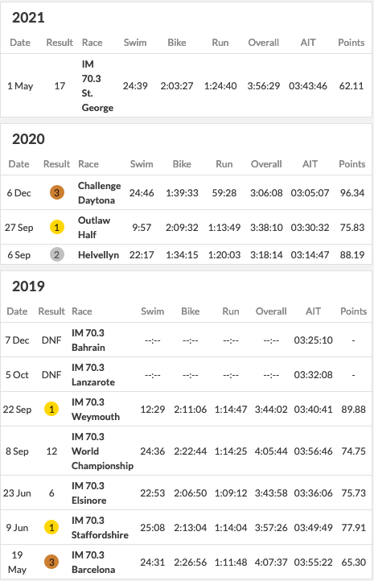
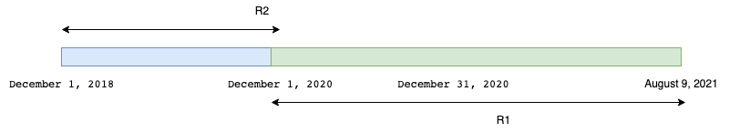
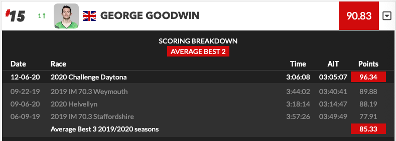

How to Collins Cup
The extract below is quoted from the PTO Website. A more detailed explanation can be found here
Until the completion of the Collins Cup on August 28, the PTO World Rankings shall be determined by averaging the World Ranking Points earned by an athlete from the highest two of (i) any races completed between December 1, 2020 and before August 9, 2021 and (ii) the average of the Athlete’s best three races for from December 1, 2018 and December 31, 2020.
An example worksheet provided by the PTO. Put simply, there are two time frames \(R1\) which considers recent races and \(R2\) which considers old races. Visually the time frame looks like this:

Now whover came up with these time frames must have not noticed that they have a common intersection. Now if someone races in that intersection, does that race go to \(R2\) bucket or the \(R1\) bucket. Depending on which bucket it goes to, the final score changes. See example below.
When you race in the red box
Meet George Goodwin. (Disclaimer: I do not know Mr Goodwin, Mr Goodwin certainly does not know me and he did not ask me to this but his profile fits the confusion)
George raced an event called Challenge Daytona on December 6th, 2020. That is in the red zone. How should we use this race to calculate his score?

Assuming R2
If we assume that this race is R2, then the picture above looks a little this.

The average of his best 3 results in R2 is \((96.34+ 89.88 + 88.19)/3 = 91.47\)
The collins cup score is now \((91.47 + 62.11)/2 = 76.79\)
Assuming R1
If we assume that this race is R1, then the picture above looks a little this.

The average of his best 3 results in R2 is \((89.88 + 88.19 + 77.91)/3 = 85.32\)
The collins cup score is now \((85.32 + 96.34)/2 = 90.83\)
The website reports the score as

Thus it would seem the last figure is the accurate model for dividing time and not the one reported in the instructions.
Thus it would seem that the actual dates are
Until the completion of the Collins Cup on August 28, the PTO World Rankings shall be determined by averaging the World Ranking Points earned by an athlete from the highest two of (i) any races completed between December 1, 2020 and before August 9, 2021 and (ii) the average of the Athlete’s best three races for from December 1, 2018 and December 1 (not 31), 2020.